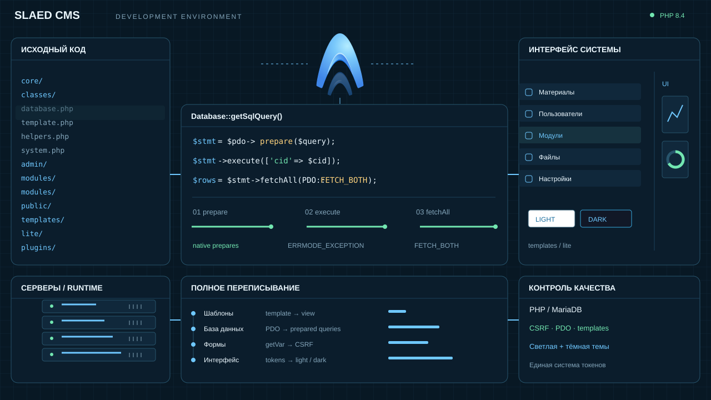
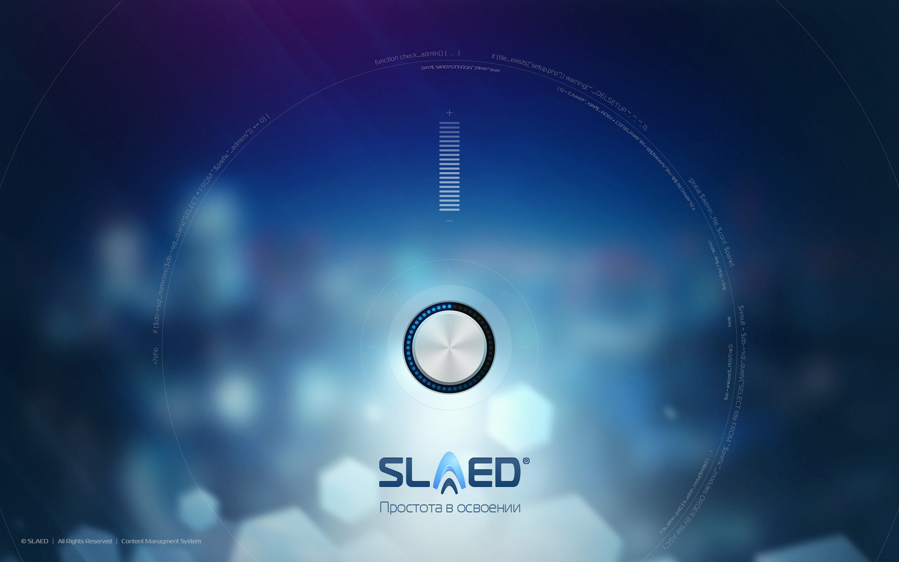
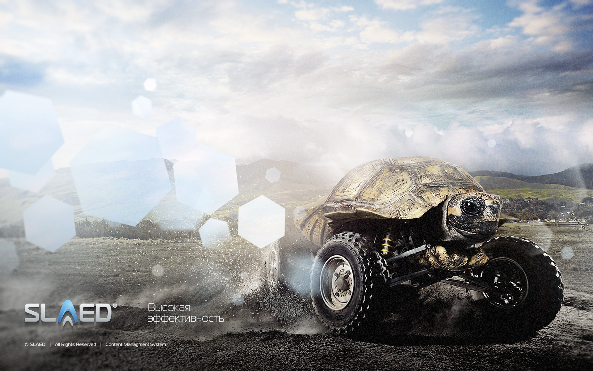
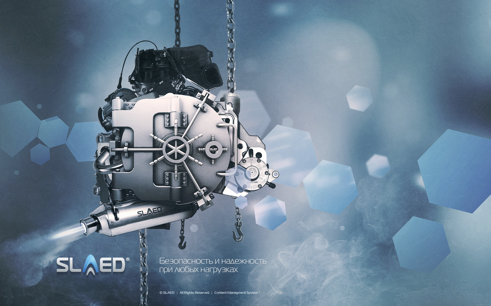

<?php $idea = 'SLAED'; $data = ['title' => $idea]; return $tpl->getHtmlPart( 'future', $data );


PHOENIXКод, который
снова живёт
Всё великое просто, но не примитивно!
ОДНА ИДЕЯ · ДВИЖЕНИЕ ВПЕРЁД2005
Первая строка кода
SLAED / ИДЕЯ
PHP / APPLICATION••••
MariaDB / DATA••••
CACHE / STORAGE••••
SLAED / Панель управления
СохранитьСветлая + тёмная
СложностьПростое управление
ОграниченияМодульность
НагрузкаСкорость и кэш
УязвимостиЗащита и контроль
200520152027 · РЕЛИЗ20352050БУДУЩЕЕ
ДНК ПРОДУКТА / ХАРАКТЕР ОСТАЁТСЯЧЕТЫРЕ ПРИНЦИПА · ОДНА СИСТЕМА
01 / ПРОСТОТАУправлять
Управлять
легко
Интуитивно понятный интерфейс, простое управление сайтом, лёгкая модификация.
ПОНЯТНОУДОБНОГИБКО

02 / ФУНКЦИОНАЛЬНОСТЬВозможности
Возможности
без границ
Неограниченные возможности, масса дополнений, расширение любыми функциями.
МОДУЛИДОПОЛНЕНИЯРАСШИРЕНИЕ

03 / ЭФФЕКТИВНОСТЬМеньше ресурсов
Меньше ресурсов
и больше скорости
Низкое потребление серверных ресурсов, высокая скорость работы системы.
СКОРОСТЬКЭШРЕСУРСЫ

04 / БЕЗОПАСНОСТЬЗащита
Защита
на каждом шаге
Мощная система безопасности, гибкие настройки, логирование всех действий.
ЗАЩИТАНАСТРОЙКИЖУРНАЛ

Простота Функциональность Эффективность Безопасность
ПРОДОЛЖАЛАСЬ
Шаг за шагом, когда было время.
ИДЕЯ → КОДcore / module
ИЗМЕНЕНИЯ → ВЕТКИmain / phoenix
ПРОВЕРКА → РЕЗУЛЬТАТtest / build
НОВАЯ АРХИТЕКТУРАПереписана
Переписана
с нуля
Характер сохранился.
Система стала совершенно новой.
core/system.phpPHP 8.4
▌
Инициализация ядра0%
ЗапросЯдроPDOHTML
prepare()execute()fetchAll()
Входные данныеФИЛЬТРАЦИЯ
ДействияТОКЕН
СобытияЖУРНАЛ
ДоступКОНТРОЛЬ
H1
Новая жизнь SLAED
Продолжаем создавать.
Всё великое просто, но не примитивно!РедакторПросмотрMarkdown
Мои файлы
uploads / phoenix phoenix.png
phoenix.png
phoenix.pngslaed.svg
Файл выбран Вставить
РАЗРАБОТКА ПРОДОЛЖАЕТСЯcore → database → security → templates → phoenix
Код становится
живым
ВОЗРОЖДЕНИЕ
PHOENIX
Всё великое просто,
но не примитивно!
РЕЛИЗ 2027PHP 8.4MariaDBНОВОЕ ЯДРОСВЕТЛАЯ / ТЁМНАЯ
ПРЕДЫСТОРИЯ00.0 / 83.4